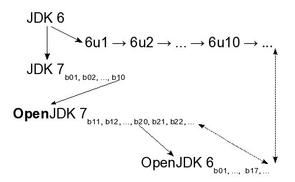

JDK 6 Project
OpenJDK 6 is an implementation of the Java SE 6 specification valuing stability, compatibility, and security. Various binaries derived from OpenJDK 6 sources have passed the Java SE 6 Test Compatibility Kit (TCK) suite, including packages for Fedora 9 and Ubuntu 9.04.
Process
As an implementation of the Java SE 6 specification, all changes to OpenJDK 6 must be allowable within that specification. This requirement precludes many API changes. Acceptable API changes include those permitted by the endorsed standards mechanism, such as upgrading to a newer version of a standalone technology, like a component JSR. One example of such an API change was the upgrade of JAX-WS from 2.0 to 2.1 in OpenJDK 6 build b06.
Changes allowable within the Java SE 6 specification may still be rejected for inclusion in OpenJDK 6 if the behavioral compatibility risk is judged as too large. Behavioral compatibility concerns implementation properties of the JDK. Clients of the JDK can knowingly or unknowingly come to rely upon implementation-specification behaviors not guaranteed by the specification and care should be taken to not break such applications needlessly. In contrast, if a change is appropriate for every other JDK release train, it is generally appropriate for OpenJDK 6 too. Examples of such universal changes include security fixes and time zone information updates.
With the above caveats, bug fixes in JDK 7 that do not involve specification changes have presumptive validity for OpenJDK 6. That is, by default such fixes are assumed to be applicable to OpenJDK 6, especially if having "soaked" in JDK 7 for a time without incident. On a related point, the fixes from the stabilized HotSpot forests (for example HotSpot Express 14 or HotSpot Express 16) are suitable for bulk porting to the OpenJDK 6 HotSpot repository without review of individual bugs.
As a general guideline, if a change is applicable to both JDK 7 and OpenJDK 6, the change should be made in JDK 7 no later than the change is made in OpenJDK 6.
With the exception of security fixes, all OpenJDK 6 code review
traffic should be sent to jdk6-dev@openjdk.java.net
for consideration before a commit occurs.
All fixes require the approval of the release manager and may
require additional technical review and approval at the discretion
of the release manager. Security fixes are first kept confidential
and applied to a private forest before being pushed to the public
forest as part of the general synchronized publication of the fix
to effected JDK release trains.
Since there is only a single master OpenJDK 6 forest, near the end of a build period the release manager may defer otherwise acceptable changes to the start of the next build.
The complete release process is documented in the file ReleaseProcess.html in the source repositories.
The schedule to tag builds of OpenJDK 6 is on an as-needed basis. The timing and feature list of a build is coordinated on the jdk6-dev alias with the IcedTea 6 project, a downstream client of OpenJDK 6. Before a build is tagged, regression and other testing is performed to verify the quality of the build.
Bug Ids
For OpenJDK 6, you can use the Oracle-internal bug id (if you
have one) or a bug id from the OpenJDK 6 bug tracker
to push a changeset. If you are using the bug id from the OpenJDK 6
bug tracker, please use the complete "issue id" that the OpenJDK 6
tracker creates: For example, OPENJDK6-42 instead of
just 42.
For OpenJDK 6, both of these are lines are acceptable as valid bug id lines:
1234567: NPE thrown on FileInputStream("")
OPENJDK6-1234: NPE thrown on FileInputStream("")
If you are backporting a changeset from jdk7, jdk7u or jdk8, using the original Oracle bug id is preferred, since it makes tracking changes easier.
Genealogy
The OpenJDK 6 code base is distinct from the code base for JDK 7 and the 6 update train. As shown in the diagram below, the original JDK 6 code base begat two lines of heirs: JDK 7 and the sequence of 6 update releases. The decision to open source the JDK code base came late in the life cycle of the development of JDK 6 so a build of JDK 7 was the first to be published as open source. By the time JDK 7 was published as OpenJDK 7, the first post-GA update to JDK 6, 6u1, had already shipped. Work continued in both the OpenJDK 7 and 6 update trains. However, an open source implementation of the Java SE 6 specification was needed as well. After considering the alternatives, OpenJDK 7 build 20 was chosen as the basis of a backward branch to create OpenJDK 6 by removing from the OpenJDK 7 sources changes inappropriate for a Java SE 6 implementation. Since then, all three trains, 6 update, OpenJDK 7, and OpenJDK 6, have continued evolving, with certain fixes being applied to or ported between the releases. Security fixes are applied to all release trains.

Code
Community
- Bug Tracker
- Mailing lists
- Bloggers
- Related Projects